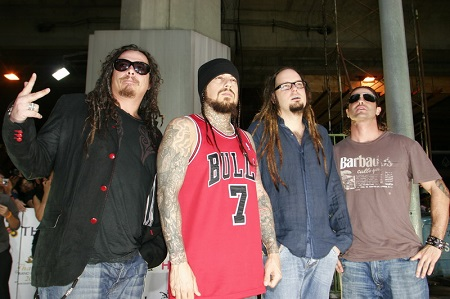

Due delle mie più grandi passioni è la musica e anche chitarra.
Sia suonarla che ascoltarla. Il mio genere preferito è il metal, ma se devo essere più preciso l'alternative e il nu metal. Il mio gruppo preferito sono i "SYSTEM OF A DOWN" o abbreviato in "S.O.A.D.". Vi lascio qui un loro video musicale della canzone Question!
Il nu metal, talvolta chiamato anche aggro-metal, neo-metal o adidas rock e scritto anche nü metal, è un sottogenere della musica heavy metal e in particolare dell'alternative metal, sorto negli Stati Uniti a metà degli anni novanta e compreso nel crossover. Generalmente mescola elementi dell'heavy metal e soprattutto della sua variante alternative con quelli di altri stili musicali, specie rap, funk, industrial metal e post-grunge. Il nu metal rappresenta essenzialmente l'ondata di alternative metal sviluppata a partire dalla seconda metà degli anni 90 a seguito della prima ondata dai primi anni del decennio. Korn e Deftones sono ritenuti gli iniziatori del genere; tuttavia anche i Limp Bizkit sono stati spesso citati nella sua storia, poiché furono il primo gruppo a seguire le coordinate dettate dai primi due e tra i primi ad ottenere molto successo, contribuendo così ai suoi sviluppi futuri. Anche i Linkin Park, durante i primi anni duemila, sono stati considerati importanti per il genere, soprattutto per il loro successo, dal momento che l'album Hybrid Theory è il più venduto dell'intera scena, con oltre 27 milioni di copie all'attivo.
Più che un genere il nu metal va considerato come un vero e proprio movimento, caratterizzato dal fatto di ascrivere a sé alcune delle principali tendenze musicali dei primi anni novanta, in sostanza relative al genere alternative metal.Il singolo che ha ispirato l'inizio del sottogenere è considerato Walk This Way (1986), nato dalla collaborazione tra Run DMC ed Aerosmith, con la produzione di Rick Rubin. Il brano faceva parte della lista tracce del terzo album in studio dei Run DMC, Raising Hell, ed è considerato il primo, in ordine cronologico, ad aver fatto conoscere al grande pubblico una formula musicale inedita per l'epoca, l'esecuzione di strofe rap su basi rock. Anche gruppi thrash metal come Anthrax e Slayer, alla fine degli anni ottanta, cominciarono a proporre brani con strofe rap e riff di chitarra vagamente metal: i primi pubblicarono infatti il singolo rap metal I'm the Man nel 1987, e quattro anni dopo collaborarono coi Public Enemy in una reinterpretazione di Bring the Noise; il chitarrista dei secondi, Kerry King, collaborò in alcuni singoli coi Beastie Boys. Le prime vere avvisaglie del genere si ebbero con il Lollapalooza, festival itinerante ideato dai Jane's Addiction nel 1991. Allora si esibirono alcuni gruppi in grado di sperimentare ibridi musicali prima abbastanza insoliti. Dopo la morte di Kurt Cobain, frontman dei Nirvana, nel 1994 il grunge e il primo alternative rock declinarono, mentre nuove tendenze rock e metal iniziarono ad emergere. In entrambi gli stili iniziarono ad essere incorporati elementi da altri generi musicali. Il termine "nu metal" fu usato inizialmente per definire la musica dei Coal Chamber, ma anche per i successi dell'Ozzfest, festival ideato dall'ex-leader dei Black Sabbath Ozzy Osbourne nel 1997, riservato esclusivamente al metal. La particolarità dell'Ozzfest era che in esso si esibivano sia gruppi esponenti dell'heavy metal classico o del thrash metal, che quelli più recenti e alternativi. Fu proprio tale festival a dimostrare l'esistenza di una fetta ancora ampia di pubblico, per questa musica. Se Led Zeppelin e Judas Priest erano citati come riferimento per l'heavy metal tradizionale, le nuove band s'ispirano tipicamente a sottogeneri successivi, come thrash metal ed alternative metal.Un altro festival volto principalmente alla promozione di gruppi del genere fu il Family Values, ideato dai Korn nel 1998, nel quale a volte, oltre a gruppi nu metal, si esibirono anche artisti rap. I primi ad emergere storicamente nel genere nu metal furono i Korn nel 1994, con il loro debutto omonimo, ancora oggi considerato un album molto innovativo, tra i più importanti ed influenti per il genere. Nel 1995 uscì invece Adrenaline, disco d'esordio dei Deftones registrato più o meno in contemporanea a quello dei Korn. I Deftones dopo sei anni di concerti erano finalmente riusciti a firmare per una major e pubblicare così un album in studio. Un altro album molto importante ed influente per i gruppi nu metal successivi fu Around the Fur dei Deftones, del 1997, che presentava sonorità ulteriormente evolute e vicine al grunge, nel quale erano riconoscibili anche influenze hardcore punk e darkwave.Nello stesso anno i Limp Bizkit, con il loro album di debutto Three Dollar Bill, Yall$, dotato di una maggiore componente hip hop, riuscirono a riscuotere molto successo e a portare il genere nel mainstream. Sempre nel 1997, i Coal Chamber esordirono con il loro album omonimo, con sonorità che presentavano molte similitudini con quelle proposte dai Korn, dal quale riuscirono però a distinguersi con il successivo Chamber Music, incorporando in esso elementi di gothic metal ed una maggiore influenza industrial.Il termine nu metal fu inventato da un giornalista di Spin nel 1997, nella recensione di un concerto dei Coal Chamber. La maggioranza dei primi gruppi di genere proveniva dalla California. Quattro anni dopo il debutto dei Korn, con l'uscita di Follow the Leader e l'apertura del Family Values Tour, il gruppo fu introdotto ad un pubblico più ampio, così come P.O.D., Linkin Park, Limp Bizkit, Incubus, Orgy, Slipknot, Staind, Disturbed, Hed P.E. (vicini al rap metal) e Static-X (molto influenzati anche dalla musica elettronica). Tutti questi artisti iniziarono anche a riscuotere consensi su Total Request Live, noto programma di MTV, contribuendo così al rilancio di metal e rock. La rete musicale trasmise anche Return of the Rock (da cui furono tratte due compilation), in cui si esibirono vari gruppi nu metal emersi alle soglie degli anni 2000. Il successo fu così consolidato, e termine e categoria iniziarono, di conseguenza, a descrivere artisti che mescolavano il metal tradizionale con altri stili. I gruppi nu metal sono soliti citare tra le proprie principali influenze gruppi quali Primus, Red Hot Chili Peppers, Living Colour e Fishbone, che ai loro tempi si distinsero per una forte impronta funk; Rage Against the Machine e Biohazard, tra i più importanti gruppi ad aver proposto un connubio tra chitarre distorte, tipicamente heavy metal, e strofe rap; Ministry, Fear Factory, Nine Inch Nails e Marilyn Manson, tra i principali esponenti dell'industrial metal; Faith No More, Jane's Addiction, Sepultura, White Zombie, Tool ed Helmet, vicini all'alternative metal. Sostengono anche di ispirarsi, più o meno direttamente, ad altri gruppi significativi hard rock, come i Black Sabbath, alla "tetrade del thrash metal" (Metallica, Megadeth, Slayer ed Anthrax, questi ultimi noti anche per aver incorporato nella loro musica elementi rap metal), ai gruppi del movimento grunge (in particolare ai Nirvana) e perfino alla new wave e al post punk di Cure e Depeche Mode. Ross Robinson è stato etichettato da molti come "il Padrino del Nu Metal",3 avendo prodotto molti dei primi album del genere. In Europa il nu metal è proposto da gruppi come gli svedesi Passenger, gli italiani Linea 77 ed Exilia, i gallesi Lostprophets ed i tedeschi Guano Apes.